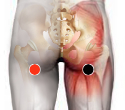

Estreptococo C
rama isquiática - rama isquiática
cresta iliaca- rama isquiática*
retroaxilar - retroaxilar
cardias - píloro

* Revisar si es homo o contralateral.
Generalidades:
Trastornos del tubo y órganos digestivos. Obstrucción intestinal, diarrea. Infecciones respiratorias y de la piel. Checar pares: Flanco y Colon transverso.
En vías respiratorias se caracteriza por presentar amigdalitis y faringitis.
Trasmisión:
La bacteria se puede contagiar hasta 3 semanas después de haber presentado síntomas.